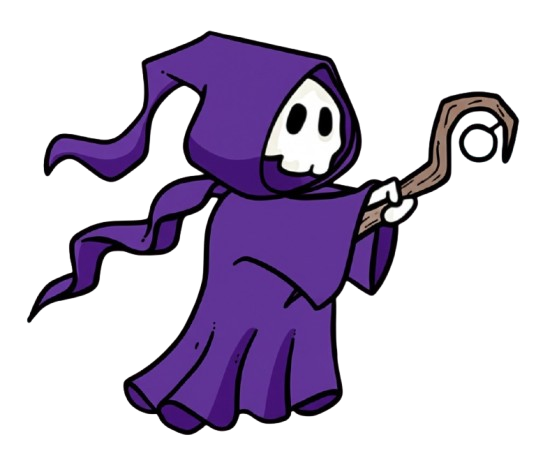

字
Lv 1
暫停
開戰
亡靈狂潮
UNDEAD FRENZY

玩法介紹
開始遊戲
強化
成就
排行
詛咒
設定
永久強化
全部退還
返回
放逐
放逐的祝福，這個職業每局都不會出現
完成
成就
返回
詛咒
−
0
+
返回
凱旋
擊敗最終首領
挑戰無盡
結算
設定
省電模式
減少晃動
全螢幕
安裝成 App
返回
安裝成 App
用瀏覽器開啟
返回
選擇祝福
暫停
本局祝福
召喚
音量
畫面
省電模式
減少晃動
全螢幕
職業玩法
繼續
標題
結束這局
陣亡
被
擊倒
0
撐過的波數
0
擊殺
0
召喚
再戰一局
標題
強化
排行
排行榜
返回
返回
怎麼玩
底部三張卡
大招
知道了
恭喜上榜！
名字
登錄
取消
確定